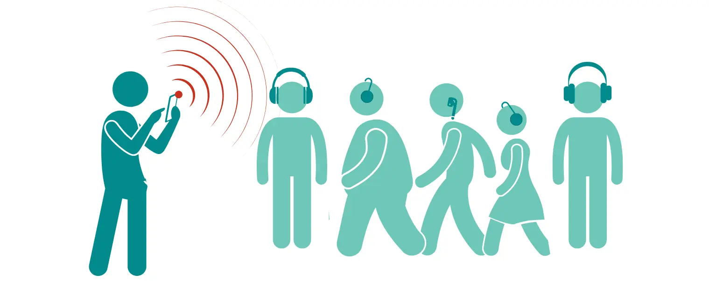

Your Nubart GUIDE with remote control | Free Demo
Full offline mode with manual remote control — the setup we've prepared for your evaluation

Guide Login
Guide device Log in here to access the remote control and trigger tracks for your group.
Your registered email:
This is the address you log in with. Keep it handy.
Log in here
Once logged in, click Remote Control, select your guide module, and click a track whenever you want to trigger it for the group.
Visitor QR Code
Visitor device Scan this in an area with connectivity to preload your audio guide. Once loaded, it keeps working with zero signal for the rest of the visit.
This is your permanent QR code. If you place an order, your visitors will use this exact code. We don't change QR codes for our customers, so you can safely print it on permanent materials.
How to get the best out of this demo
Set Up the Guide Device
On the Guide device, go to www.nub.art/customer/login and log in. If this is your first time, use the registration link in the box above to create your account first.
- Click Remote Control.
- You'll see the list of tracks you can trigger for the group.
Set Up the Visitor Device and Preload the Guide
On the Visitor device, while you still have connectivity, scan the QR code at the top of this page (or tap the link below it).
- Select a language. This starts preloading the complete audio guide in that language onto the device.
- Wait for the preload to finish before moving into a low-signal area.
- No login, no app, no permissions required.
Trigger Tracks Remotely
From the Guide device's Remote Control panel, click any track to send it, in real time, to every Visitor device with an open session. The track's colour tells you what's happening:
- 🟢 Green — not triggered yet.
- 🔴 Red, with a progress bar — sending now. Wait for it to turn grey before you trigger the next one.
- 🔘 Grey — sent successfully. You can click it again any time to resend it.
- 🟡 Yellow — couldn't send. Normally means zero connectivity at that spot.
Triggered tracks play automatically on the visitor's phone by default. If you'd rather they just scroll to the top of the screen for a manual tap, let us know and we'll switch autoplay off.
Two articles cover the mechanics behind this demo in more depth:
nubart.eu → Remote-controlled audio guides
nubart.eu → Offline mode for audio guides

Any questions? I am the real person behind this demo and will be happy to help:
Evelyn Crende
Sales Manager